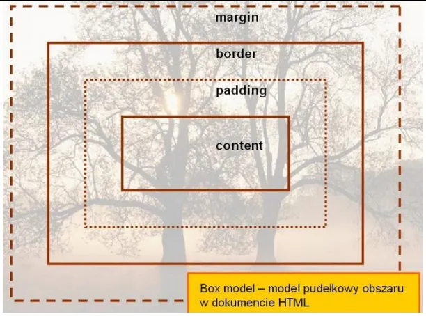
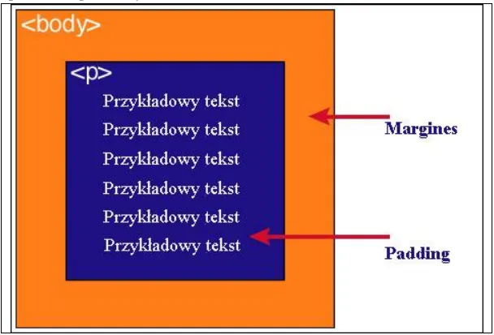

<!DOCTYPE html>
       <html lang="pl-PL">
       <html>
             <head>
                   <meta charset="utf-8">
                   <title>  Jacek Banaszczyk </title>
             </head>
              <body>

</body>
      </html>
<OL TYPE=1 START=1>
<h1><LI>Podaj definicję modelu pudełkowego</h1>
 
 Każdy element w dokumencie HTML, otacza się prostokątnym obszarem zwanym pudełkiem
(ang. Box model). Pudełko składa się z kilku warstw:

<h1><LI>Wykonaj oraz uzupełnij tabelę:</h1>
<!DOCTYPE html>
<html>
<head>
<meta charset="UTF-8">
<title>Tabela HTML</title>
</head>
<body>
<TABLE BORDER=2 BORDERCOLOR=Black WIDTH=80% HEIGHT=200> 


<tr>
<TR BGCOLOR=white>
 <td><b>zawartość</b></td>
 <td><b><center>opis</center></b></td>
</tr>

 <tr>
<TR BGCOLOR=white>
 <td><b>content</b></td>
 <td><b> zawartość elementu (np.: tekst, obrazek)</b></td>
 </tr>

</tr>
<TR BGCOLOR=white>
<td><b>padding</b></td>
<td><b> otaczające marginesy wewnętrzne, odstęp między obramowaniem i 
zawartością elementu</b></td>
</tr>
 
 
 <tr>
<TR BGCOLOR=white>
 <td><b>border</b></td>
 <td><b>obramowania wokół zawartości elementu, ma styl i kolor.</b></td>
</tr>
 

 <tr>
<TR BGCOLOR=white>
 <td><b>margin</b></td>
 <td><b> marginesy wokół ramki (margines zewnętrzny). Jest to pusty obszar wokół 
ramki, który nie ma koloru tła i jest przeźroczysty.</b></td>
</tr>
 </tbody>
</table>


<h1><LI>Podaj dwie uwagi na temat modelu pudełkowego.</LI></h1>
Uwagi:<br>
1)Padding, border i margin mogą mieć zerową wartość.
<br>
<br>
Uwagi:<br>
2)Tło elementu jest określone dla wszystkich z podanych powyżej obszarów z wyjątkiem
marginesów zewnętrznych, które zawsze są przezroczyste (transparent).

<h1><LI>Wstaw grafikę obrazującą model pudełkowy.</h1>
	
	<h1> <Li> Wstaw grafikę obrazującą różnicę pomiędzy paddingiem i marginesem wraz z opisem </h1>
		
</body>
      </html>